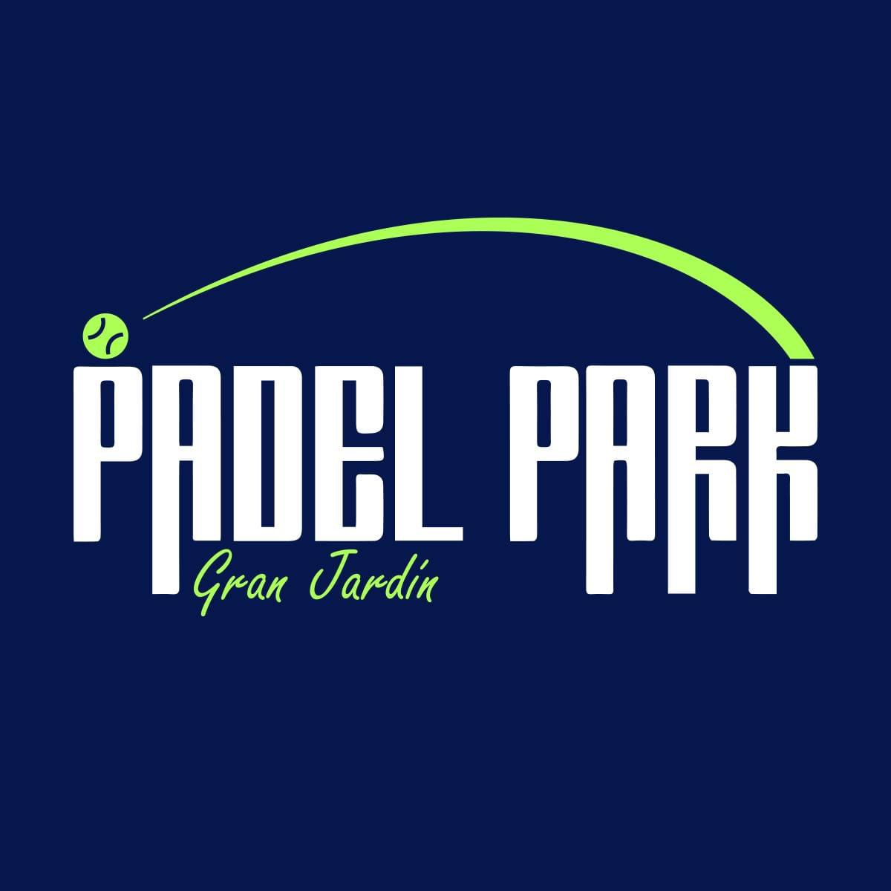

La app de Padel Park se cambió de dirección
Tu tarjeta de lealtad, los avisos y las reservas ahora están en la nueva app de socios. Si no te lleva en un momento, toca el botón.
Ir a la nueva app app-padel-park.vercel.app/socios/
Tu tarjeta de lealtad, los avisos y las reservas ahora están en la nueva app de socios. Si no te lleva en un momento, toca el botón.
Ir a la nueva app app-padel-park.vercel.app/socios/